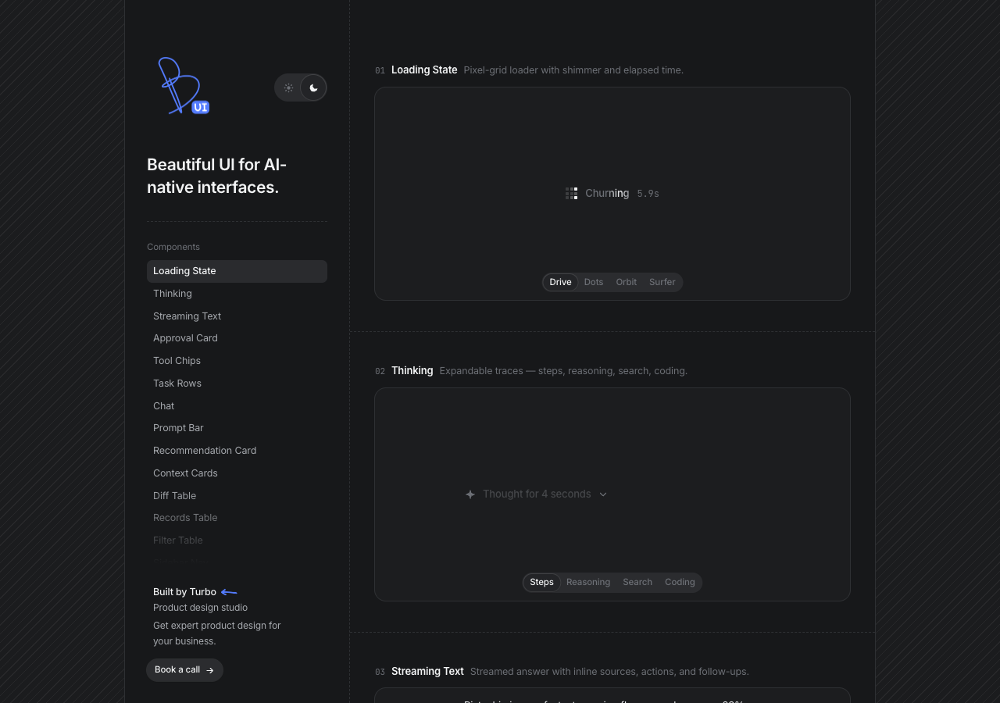
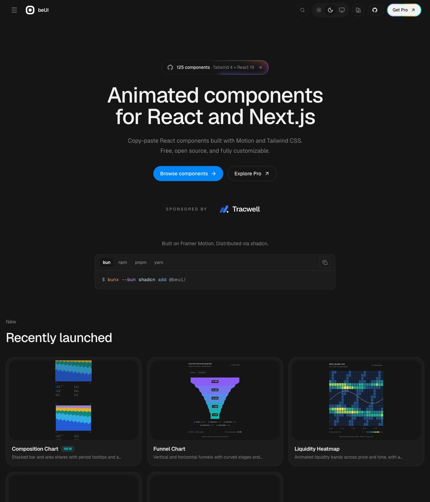
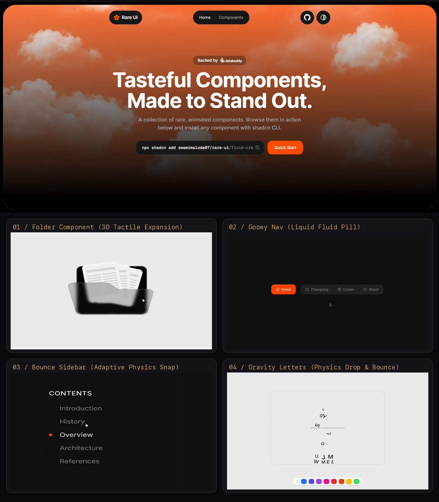
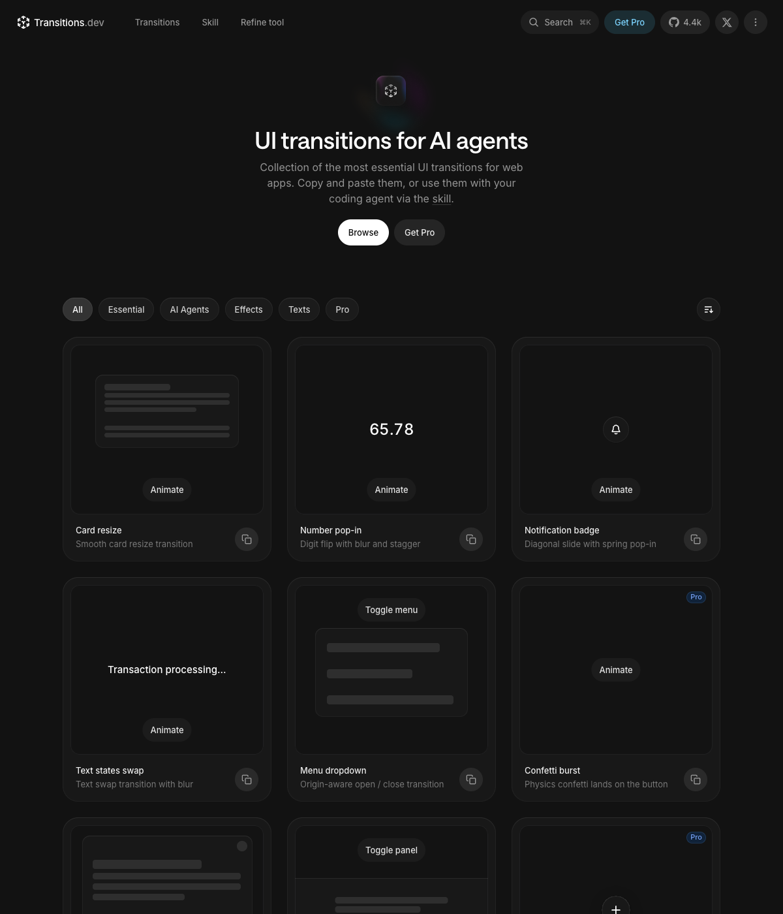
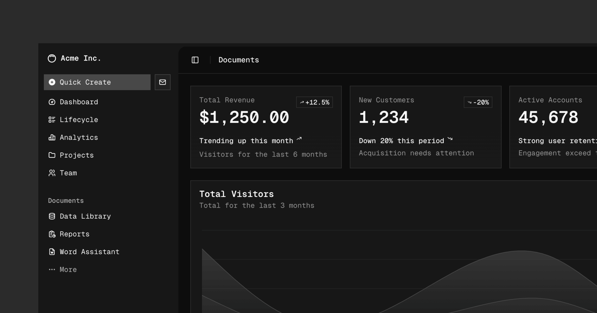

beautifului.dev ✦ 专为 Agent 和大模型交互打造

• Thinking State：可折叠推理链与耗时计时器
• Streaming Text：流式输出与内联 Sources 来源
• Approval Card：Agent 执行高危动作前的人类审批
• Tool Chips：工具调用/代码修改的紧凑胶囊状态条
beui.dev ✦ 125+ 动效组件 · shadcn CLI 直拷

• Dynamic Island：灵动岛胶囊弹性变形与展开
• Morphing Modal：无感多步骤形变弹窗，自适应高度
• macOS Dock：带光标弹性指示器的悬浮应用坞
• Animated Toast：手势物理滑动与空间堆叠通知
rareui.com ✦ 打造一眼记住的产品记忆点

• folder-component：极具拟物感的 3D 折叠交互文件夹
• proximity-sidebar：按光标距离动态感应吸附的侧边栏
• family-drawer：如流体般细腻的交互式抽屉
• gravity-letters：重力碰撞物理文字效果
transitions.dev ✦ 专为 AI Agent 调教的转场曲线

• Ease Bounce：cubic-bezier(0.34, 1.36, 0.64, 1)
• Smooth Out：cubic-bezier(0.22, 1, 0.36, 1)
• Stagger：40ms 逐项阶梯微延迟消除机械感
• Micro Blur：4px ~ 8px 位移配合 2px 高斯模糊
ui.shadcn.com ✦ Copy-Paste 哲学的母体生态

• Radix UI 内核：最严谨的键盘导航与无障碍标准（a11y）
• 无黑盒依赖：代码 100% 在你的工程里，随意重构
• Agent 认知度最高：所有编程模型都对它掌握最透彻
无需死记硬背，把路由规则配置进 Agent
# 意图分流决策树 (Intent Routing)
1. AI/Agent 原生界面 → 选 Beautiful UI
2. 丝滑现代动效与微交互 → 选 beUI
3. 破除同质化/记忆点卡片 → 选 Rare UI
4. 动效僵硬/调校缓动曲线 → 抄 Transitions
5. 通用工业级组件底座 → 选 shadcn/uiai-ui-taste-skill.html 可一键复制完整规则。